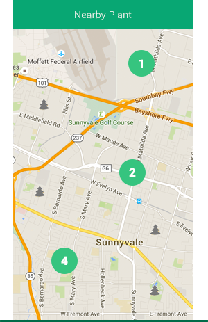

Discover Plants Near You
Yet to be discovered Plants are represented by the grey tree icon. Discovered Plants are represented by the green tree icon. When there are lots of Plants at one location, we will group them together. The feed will display all the Plants near you physically within a 2km radius. If you like a Plant, add water to it. If you want to Plant something, tap on the GREEN Plant button.